。神经元的参数是和
。神经元的参数是和 :
:在修改了关于从数据中学习的概念之后，我们现在将密切关注一种算法，该算法训练一种最基本的基于神经的模型:感知机。我们将看看算法运行所需的步骤，以及停止条件。本章将介绍感知器模型，它是第一个代表神经元的模型，旨在以简单的方式从数据中学习。感知器模型是理解从数据中学习的基本和高级神经模型的关键。在这一章中，我们还将讨论与非线性可分数据相关的问题和注意事项。
完成这一章后，你应该对讨论感知器模型和应用它的学习算法感到舒服了。您将能够在线性和非线性可分离数据上实现该算法。
具体来说，本章涵盖以下主题:
回到第一章、机器学习介绍，我们简单介绍了一个神经元的基本模型和感知器学习算法 ( PLA )。在这一章中，我们将重温和扩展这个概念，并展示如何用Python来编码。我们将从基本定义开始。
感知器是对人类启发的信息处理单元的类比，最初由F. Rosenblatt构想，并在图5.1 中描述(Rosenblatt，F. (1958))。在该模型中，输入用向量表示，神经元的激活由函数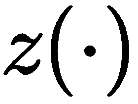给出，输出为。神经元的参数是和:

图5.1-感知器的基本模型
感知器的可训练参数为 ，未知。因此，我们可以使用输入训练数据
，未知。因此，我们可以使用输入训练数据 通过PLA来确定这些参数。从图5.1 , 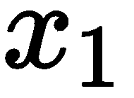 乘以
通过PLA来确定这些参数。从图5.1 , 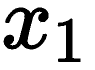 乘以 ，然后
，然后 乘以
乘以 ，
， 乘以1；所有这些乘积相加，然后传递到符号激活函数，该函数在感知器中的操作如下:
乘以1；所有这些乘积相加，然后传递到符号激活函数，该函数在感知器中的操作如下:
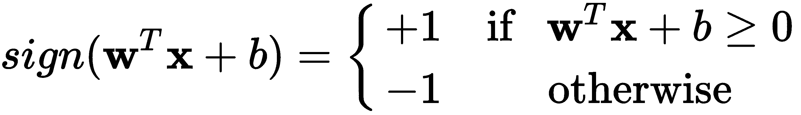
激活标志的主要作用是将模型的任何响应映射成一个二进制输出:  。
。
现在我们来谈谈一般意义上的张量。
在Python中，感知器的实现需要一些简单的张量(向量)运算，这些运算可以通过标准的NumPy功能来执行。首先我们可以假设给我们的数据  是一个向量的形式，包含多个向量
是一个向量的形式，包含多个向量 (一个矩阵)，表示为
(一个矩阵)，表示为  ，多个单独的目标表示为一个向量
，多个单独的目标表示为一个向量  。但是，请注意，为了更容易实现感知器，有必要将
。但是，请注意，为了更容易实现感知器，有必要将 包含在
包含在 中，如图5.1 中的所示，这样，如果我们将
中，如图5.1 中的所示，这样，如果我们将 修改为
修改为 ，将
，将 修改为 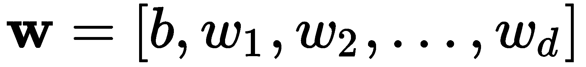 ，则 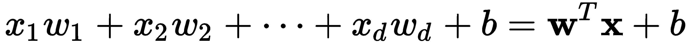 中的乘积和加法可以简化。这样，对于输入
修改为 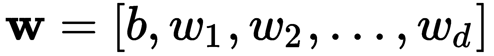 ，则 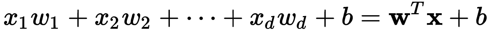 中的乘积和加法可以简化。这样，对于输入  的感知器响应可以简化如下:
的感知器响应可以简化如下:
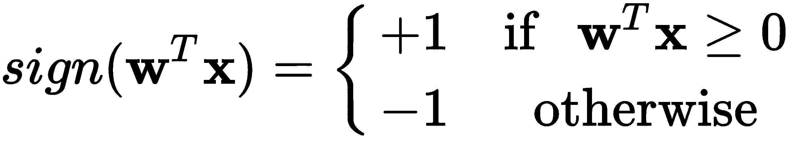
注意 现在隐含在 中。
中。
说我们要有训练数据X，需要为感知器准备；我们可以使用一个简单的线性可分数据集来实现这一点，该数据集可以通过scikit-learn的dataset方法make_classification生成，如下所示:
from sklearn.datasets import make_classification
X, y = make_classification(n_samples=100, n_features=2, n_classes=2,
n_informative=2, n_redundant=0, n_repeated=0,
n_clusters_per_class=1, class_sep=1.5,
random_state=5)
在这里，我们使用make_classification构造函数为两个类(n_classes)产生100个数据点(n_samples)，并且有足够的间隔(class_sep)来产生线性可分的数据。但是数据集在集合 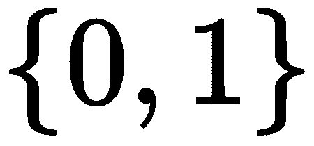 中的y产生了二进制值，我们需要将其转换为集合  中的值。这可以通过简单地执行以下操作，用负目标替换零目标来容易地实现:
中的值。这可以通过简单地执行以下操作，用负目标替换零目标来容易地实现:
y[y==0] = -1
生成的数据集如图图5.2 所示:

图5.2–感知器测试的二维数据样本
接下来，我们可以通过将长度为N=100的一个向量添加到X来将数字1添加到每个输入向量，如下所示:
import numpy as np
X = np.append(np.ones((N,1)), X, 1)
X中的新数据现在包含一个1的向量。这将允许更容易地计算所有 的张量运算
的张量运算  。将矩阵
。将矩阵 简化为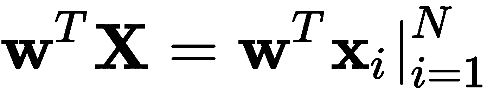，这种常见的张量运算可以在一个单一步骤中完成。我们甚至可以将此操作和符号激活功能合并在一个步骤中，如下所示:
简化为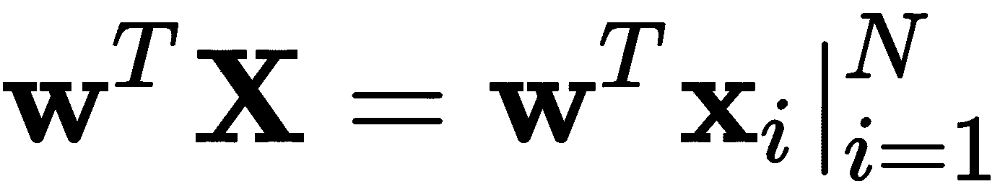，这种常见的张量运算可以在一个单一步骤中完成。我们甚至可以将此操作和符号激活功能合并在一个步骤中，如下所示:
np.sign(w.T.dot(X[n]))
这相当于数学张量运算  。记住这一点，让我们使用前面介绍的数据集和刚才描述的操作来更详细地回顾一下PLA。
。记住这一点，让我们使用前面介绍的数据集和刚才描述的操作来更详细地回顾一下PLA。
感知器学习算法 ( PLA )如下:
输入:二进制类数据集
初始化为零，并迭代计数器
 ，其真正的标签是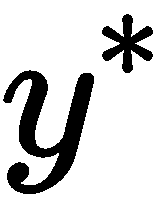如下:
，其真正的标签是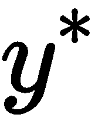如下:
 ，并重复
，并重复返回 : 
现在，让我们看看这是如何在Python中实现的。
下面是Python中的一个实现，我们将一部分一部分地讨论，其中一些已经讨论过了:
N = 100 # number of samples to generate
random.seed(a = 7) # add this to achieve for reproducibility
X, y = make_classification(n_samples=N, n_features=2, n_classes=2,
n_informative=2, n_redundant=0, n_repeated=0,
n_clusters_per_class=1, class_sep=1.2,
random_state=5)
y[y==0] = -1
X_train = np.append(np.ones((N,1)), X, 1) # add a column of ones
# initialize the weights to zeros
w = np.zeros(X_train.shape[1])
it = 0
# Iterate until all points are correctly classified
while classification_error(w, X_train, y) != 0:
it += 1
# Pick random misclassified point
x, s = choose_miscl_point(w, X_train, y)
# Update weights
w = w + s*x
print("Total iterations: ", it)
本章的张量运算部分已经讨论了前几行。使用w = np.zeros(X_train.shape[1])将初始化为零。这个向量的大小取决于输入的维度。然后，it仅仅是一个迭代计数器，用于跟踪在PLA收敛之前执行的迭代次数。
classification_error()方法是一个助手方法，它将参数w的当前向量、输入数据X_train和相应的目标数据y作为参数。该方法的目的是确定当前状态下误分类点的数量，如果有，返回错误总数。该方法可以定义如下:
def classification_error(w, X, y):
err_cnt = 0
N = len(X)
for n in range(N):
s = np.sign(w.T.dot(X[n]))
if y[n] != s:
err_cnt += 1 # we could break here on large datasets
return err_cnt # returns total number of errors
这种方法可以简化如下:
def classification_error(w, X, y):
s = np.sign(X.dot(w))
return sum(s != y)
然而，虽然这对于小数据集来说是一个很好的优化，但是对于大数据集来说，可能没有必要计算所有的误差点。因此，可以使用第一种(也是更长的)方法，并根据预期的数据类型进行修改，如果我们知道我们将处理大型数据集，我们可以在第一次出现错误时中断该方法。
我们代码中的第二个助手方法是choose_miscl_point()。该方法的主要目的是随机选择一个错误分类的点，如果有的话。它将参数w的当前向量、输入数据X_train和相应的目标数据y作为自变量。它返回一个错误分类的点x，以及对应的目标符号应该是什么s。该方法可以如下实现:
def choose_miscl_point(w, X, y):
mispts = []
for n in range(len(X)):
if np.sign(w.T.dot(X[n])) != y[n]:
mispts.append((X[n], y[n]))
return mispts[random.randrange(0,len(mispts))]
类似地，这可以通过随机化索引列表、遍历它们并返回找到的第一个索引来优化速度，如下所示:
def choose_miscl_point(w, X, y):
for idx in random.permutation(len(X)):
if np.sign(w.T.dot(X[idx])) != y[idx]:
return X[idx], y[idx]
然而，第一个实现对于绝对的初学者或者那些想要对错误分类的点进行一些额外分析的人来说可能是有用的，这可以在列表mispts中方便地获得。
不管实现如何，关键点是随机选择错误分类的点。
最后，使用当前参数、错误分类点和执行w = w + s*x的行上的相应目标进行更新。
如果您运行完整的程序，它应该输出如下内容:
Total iterations: 14
迭代的总次数可以根据数据的类型和误分类点选择的随机性质而变化。对于我们正在使用的特定数据集，决策边界可能如图图5.3 所示:
图5.3–用计划发现的决策边界
迭代的次数也将取决于特征空间中数据点之间的间隔或间隙。差距越大，越容易找到解决办法，反之亦然。最坏的情况是数据是非线性可分的，我们接下来会谈到这一点。
正如我们之前讨论的，如果数据是可分的，感知器会在有限的时间内找到解决方案。然而，找到一个解需要多少次迭代取决于这些组在特征空间中彼此的接近程度。
以下段落将讨论不同类型数据的收敛性:线性可分数据和非线性可分数据。
线性可分数据的收敛性
这使我们能够研究，如果我们改变分离参数，感知器算法平均需要多少次迭代才能收敛。实验可以设计如下:
X, y = make_classification(..., class_sep=2.0, ...)
我们将从大到小改变分离系数，记录收敛所需的迭代次数:2.0，1.9，..., 1.2, 1.1.
跑
|
2.0 |
1.9 |
1.8 |
1.7 |
1.6 |
1.5 |
1.4 |
1.3 |
1.2 |
1.1 |
一 |
|
2 |
2 |
2 |
2 |
七 |
10 |
四 |
15 |
13 |
86 |
2 |
|
5 |
一 |
2 |
2 |
四 |
8 |
6 |
26 |
62 |
169 |
3 |
|
四 |
四 |
5 |
6 |
6 |
10 |
11 |
29 |
27 |
293 |
... |
|
... |
... |
... |
... |
... |
... |
... |
... |
... |
... |
998 |
|
2 |
5 |
3 |
一 |
9 |
3 |
11 |
9 |
35 |
198 |
紧急服务电话 |
|
2 |
2 |
四 |
七 |
6 |
8 |
2 |
四 |
14 |
135 |
1000 |
|
2 |
一 |
2 |
2 |
2 |
8 |
13 |
25 |
27 |
36 |
平均。 |
|
2.79 |
3.05 |
3.34 |
3.67 |
4.13 |
4.90 |
6.67 |
10.32 |
24.22 |
184.41 |
标准。 |
|
1.2 |
1.3 |
1.6 |
1.9 |
2.4 |
3.0 |
4.7 |
7.8 |
15.9 |
75.5 |
75.5 |
该表显示，当数据被很好地分离时，平均迭代次数相当稳定；然而，随着分离间隙的减小，迭代次数急剧增加。为了直观起见，表中的相同数据现在以对数标度显示在图5.4 中:
图5.4–随着数据组越来越接近，PLA迭代次数的增长

很明显，随着分离间隙的缩小，迭代次数会呈指数增长。图5.5 描绘了最大分离间隙2.0，表明PLA在四次迭代后找到了解决方案:
图5.5–感知器在4次迭代中找到了分离间隙为2.0的解决方案
Figure 5.5 – The perceptron found a solution in four iterations for a separation gap of 2.0
同样，图5.6 显示，对于最大的缺口，1.1，PLA需要183次迭代；仔细观察该图可以发现，后一种情况的解决方案很难找到，因为数据组彼此过于接近:
图5.6–感知器在183次迭代中找到了分离间隙为1.1的解决方案

如前所述，不可线性分离的数据可以产生1.0的间隙，并且PLA将在无限循环中运行，因为总会有数据点被错误分类，并且classification_error()方法永远不会返回零值。对于这些情况，我们可以修改PLA以允许在非线性可分数据上寻找解决方案，我们将在下一节中讨论。
非线性可分数据的收敛性
防止算法永远运行的机制
With respect to the first point, we can simply specify a number of iterations at which the algorithm can stop. With respect to the second point, we can simply keep a solution in storage, and compare it to the one in the current iteration.
此处显示了PLA的相关部分，新的更改用粗体标出，我们将对此进行详细讨论:
在这段代码中，bestW是一个记录目前为止最佳结果的字典，它被初始化为合理的值。首先请注意，循环现在被数字1，000所限制，这是您当前允许的最大迭代次数，您可以将其更改为您希望的最大迭代次数。对于每次迭代成本都很高的大型数据集或高维数据集，减少这个数量是合理的。
X, y = make_classification(n_samples=N, n_features=2, n_classes=2,
n_informative=2, n_redundant=0, n_repeated=0,
n_clusters_per_class=1, class_sep=1.0,
random_state=5)
y[y==0] = -1
X_train = np.append(np.ones((N,1)), X, 1) # add a column of ones
# initialize the weights to zeros
w = np.zeros(X_train.shape[1])
it = 0
bestW = {}
bestW['err'] = N + 1 # dictionary to keep best solution
bestW['w'] = []
bestW['it'] = it
# Iterate until all points are correctly classified
# or maximum iterations (i.e. 1000) are reached
while it < 1000:
err = classification_error(w, X_train, y)
if err < bestW['err']: # enter to save a new w
bestW['err'] = err
bestW['it'] = it
bestW['w'] = list(w)
if err == 0: # exit loop if there are no errors
break
it += 1
# Pick random misclassified point
x, s = choose_miscl_point(w, X_train, y)
# Update weights
w += s*x
print("Best found at iteration: ", bestW['it'])
print("Number of misclassified points: ", bestW['err'])
接下来的变化是包含了条件语句if err < bestW['err']，它决定了我们是否应该存储一组新的参数。每当由错误分类样本的总数确定的误差低于存储参数的误差时，就进行更新。为了完成，我们仍然必须检查没有错误，这表明数据是线性可分的，已经找到了解决方案，循环需要终止。
最后几个print语句将简单地告知记录最佳解决方案时获得的迭代和误差。输出可能如下所示:
该输出是通过在数据集上运行更新的PLA产生的，间隔为1.0，如图图5.7 所示:
图5.7-更新的PLA在95次迭代后找到了一个只有一个错误分类点的解决方案
Best found at iteration: 95
Number of misclassified points: 1
从图中可以看出，有一个来自阳性类别的样本被错误地分类。知道在这个例子中总共有100个数据点，我们可以确定精度是99/100。

这种类型的算法存储了迄今为止的最佳解，通常被称为袖珍算法 (Muselli，M. 1997)。并且学习算法的提前终止的想法受到了众所周知的数值优化方法的启发。
From the figure, it can be seen that there is one sample from the positive class that is incorrectly classified. Knowing that in this example there is a total of 100 data points, we can determine that the accuracy is 99/100.
一个普遍的限制是，感知器只能产生基于二维直线或多维线性超平面的解决方案。然而，这种限制可以通过将几个感知器放在一起并放在多个层中来容易地解决，以产生用于可分离和不可分离问题的高度复杂的非线性解决方案。这将是下一章的主题。
摘要
本章概述了经典的感知器模型。我们讨论了线性和非线性可分离数据集的理论模型及其Python实现。在这一点上，你应该感到自信，你对感知机有足够的了解，你可以自己实现它。您应该能够在神经元的环境中识别感知器模型。此外，您现在应该能够在感知器中实现口袋算法和提前终止策略，或者任何其他一般的学习算法。
问题和答案
数据的可分性与PLA的迭代次数有什么关系？
并不总是这样，只是对于线性可分的数据。
不会。但是，您可以通过修改pocket算法找到一个可接受的解决方案。
因为这是最基本的学习策略之一，有助于理解学习的可能性。如果没有感知器，科学界可能需要更长时间才能意识到基于计算机的自动学习算法的潜力。
罗森布拉特，F. (1958)。感知器:大脑中信息存储和组织的概率模型。心理评论，65卷6期，386页。